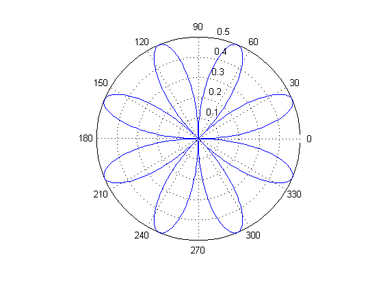
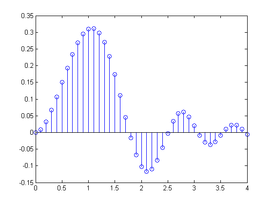

2 次元プロット
ここでは、MATLAB® の 2 次元ライン プロットのいくつかの例と役立つヒントを示します。
目次
このデモの最後のドキュメンテーション リンクをたどることで、すべての MATLAB プロット関数のギャラリーを見ることができます。特定のプロット関数またはプロパティの詳細は、コマンド プロンプトで doc に続けて、関数またはプロパティの名前を入力してください。
チャープ波形のライン プロット
この例は、チャープ信号の基本的なライン プロットを示します。さらに、x 値を初期化する 1 つの方法と、xlabel と ylabel を使用して x と y 軸に対してラベルを入力する方法を示します。等間隔のデータ セットを初期化するための別の方法の詳細は、コマンド プロンプトで doc linspace と入力してください。ここでは、y 値を x の関数として計算し、変数 y に格納しますが、1 つのコマンドで計算された y 値だけをプロットすることもできます。たとえば、plot(sin((0:0.05:5).^2)) とします。
x=0:0.05:5; y=sin(x.^2); plot(x,y); xlabel('Time') ylabel('Amplitude')

釣鐘型曲線の棒グラフ
このように、y の引数として plotに y 値を生成する関数を渡す場合は、y 値を保持するための変数は必要ありません。
x = -2.9:0.2:2.9; bar(x,exp(-x.*x));

正弦波の階段状プロット
x=0:0.25:10; stairs(x,sin(x));

エラー バー プロット
関数 errorbar は、x および y 値のライン プロットを描画し、垂直のエラー バーを各観測上に重ね描きします。その範囲は追加の引数に依存します。ここでは、乱数列を生成する関数 rand を使用して、エラー データをライン 3 に作成します。
x=-2:0.1:2; y=erf(x); e = rand(size(x))/10; errorbar(x,y,e);

極座標プロット
この例は、半径 rho に対する角度 theta (t、ラジアン単位) の極座標をプロットします。
t=0:0.01:2*pi; polar(t,abs(sin(2*t).*cos(2*t)));
ステム プロット
ステム プロットは、垂直線で共通のベースラインに接続する各 x、y 値に対してマーカーを描画します。
x = 0:0.1:4; y = sin(x.^2).*exp(-x); stem(x,y)
散布図
この例は、マーカーに赤い星印を使用して、2 つの道路における 1 時間ごとの交通量の関係を示しています。前回の例では、青ぬきの丸印の既定マーカーを使用しました。ライン スタイル、色、マーカーの変更の詳細は、コマンド ラインで doc line、doc scatter または doc line_props と入力してください。
load count.dat scatter(count(:,1),count(:,2),'r*') xlabel('Number of Cars on Street A'); ylabel('Number of Cars on Street B');

プロット ツールと例についての詳細は、MATLAB グラフィックス ドキュメンテーションの MATLAB プロットのタイプを参照するか、コマンド プロンプトで doc graph2d と入力してください。